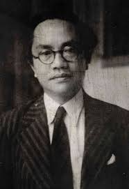

Amir Syarifuddin Harahap

- Tanggal Lahir : 27 April 1907
- Tempat Lahir : Medan, Sumatera Utara
- Tanggal Meninggal Dunia : 19 Desember 1948
- Lokasi Pemakaman : Jenazahnya tidak diketemui setelah beliau ditembak oleh seorang tentara Belanda di Ngalihan, Ganter, Jawa Tengah
Amir Syarifuddin Harahap lahir di Medan pada tahun 1907. Ia termasuk tokoh muda yang aktif dalam pergerakan nasional sejak masa studi di Belanda. Semangat kebangsaannya tumbuh kuat setelah menyaksikan kesadaran persatuan pemuda Indonesia yang berpuncak pada Sumpah Pemuda 1928, yang mengilhami banyak pemuda untuk berjuang bersama tanpa memandang suku dan agama.
Setelah kembali ke tanah air, Amir turut berjuang menegakkan cita-cita persatuan yang terkandung dalam Sumpah Pemuda. Ia mendirikan organisasi Gerindo (Gerakan Rakyat Indonesia) dan menjadi salah satu tokoh sosialis yang memperjuangkan kemerdekaan Indonesia. Semangat nasionalisme dan persatuan terus ia tunjukkan dalam berbagai jabatan pemerintahan setelah proklamasi, termasuk saat menjadi Menteri Penerangan dan Perdana Menteri Indonesia.
Walau akhirnya terlibat dalam peristiwa politik yang berujung tragis, Amir Syarifuddin tetap dikenang sebagai tokoh muda yang mewujudkan semangat Sumpah Pemuda dalam perjuangan nyata. Ia memperlihatkan bahwa cita-cita persatuan dan kemerdekaan harus diperjuangkan dengan tekad dan pengorbanan, bahkan hingga akhir hayatnya pada 19 Desember 1948 di Ngawi, Jawa Timur.